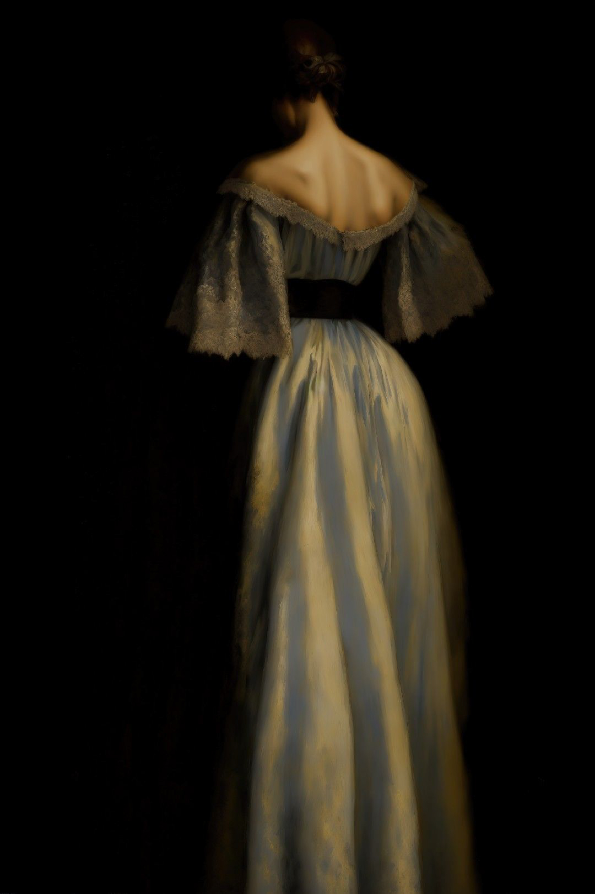
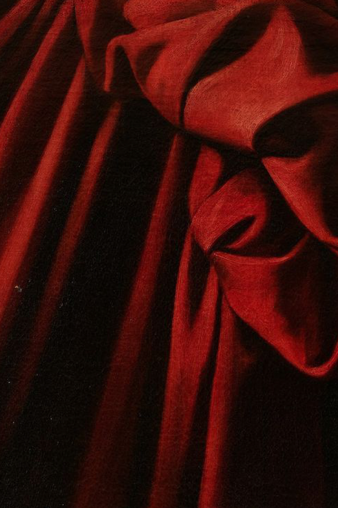
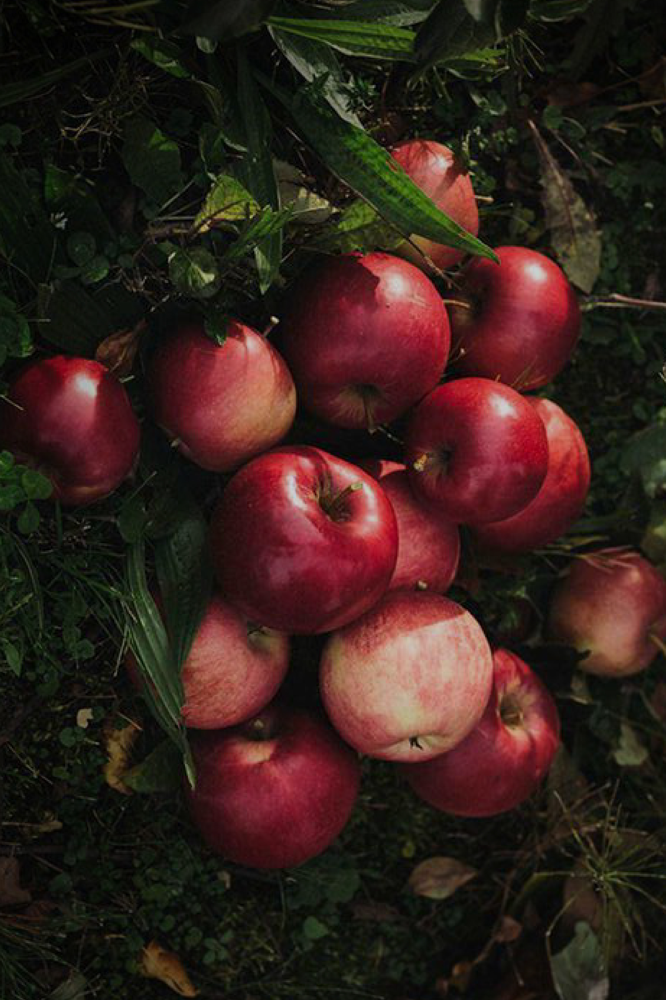
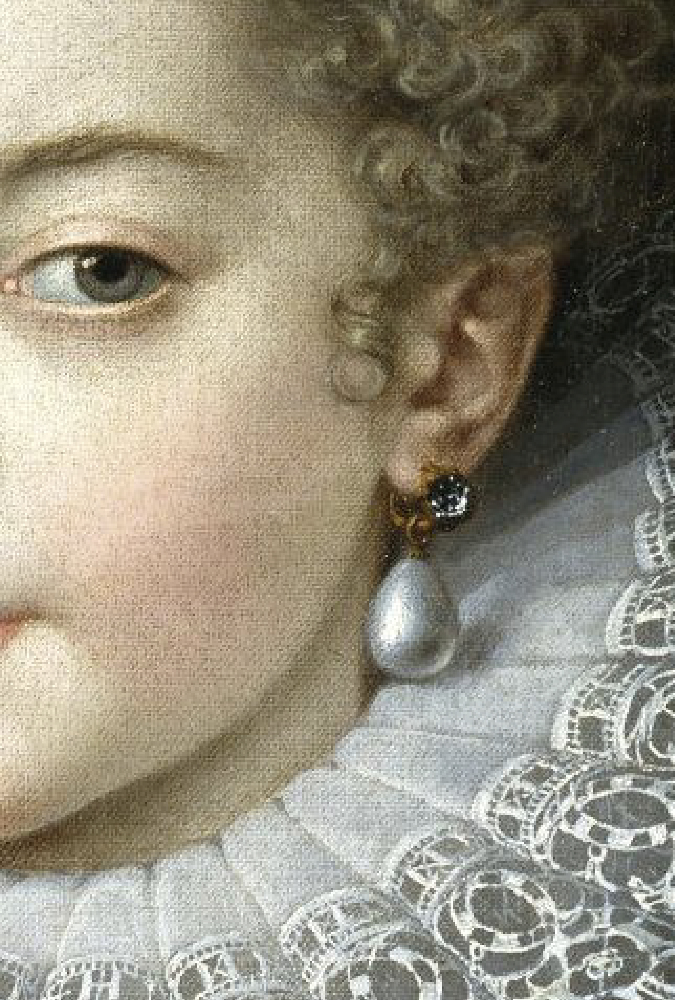

O MARCE
Cemborka to marka tworząca torebki, o unikalnym, wyrazistym i nieoczywistym designie, które dodają wyrazistości i unikalności codziennym stylizacjom.
Torebki są projektowane oraz szyte w Polsce z najwyższą starannością oraz dbałością o detale, od projektu po ostatni szew.




Cemborka to marka tworząca torebki, o unikalnym, wyrazistym i nieoczywistym designie, które dodają wyrazistości i unikalności codziennym stylizacjom. Torebki są projektowane oraz szyte w Polsce z najwyższą starannością oraz dbałością o detale, od projektu po ostatni szew. Projektując poszukujemy ciekawych zdarzeń i kontrastów balansując między światem sztuki a designu, przeszłością a nowoczesnością. Estetyka marki łączy pozornie niepasujące ze sobą światy aby stworzyć obiekty wielowymiarowe, nieoczywiste dla nieoczywistych kobiet, które chcą być bardziej niż do tej pory.
Projektując poszukujemy ciekawych zdarzeń i kontrastów balansując między światem sztuki a designu, przeszłością a nowoczesnością. Estetyka marki łączy pozornie niepasujące ze sobą światy aby stworzyć obiekty wielowymiarowe, nieoczywiste dla nieoczywistych kobiet, które chcą być bardziej niż do tej pory.